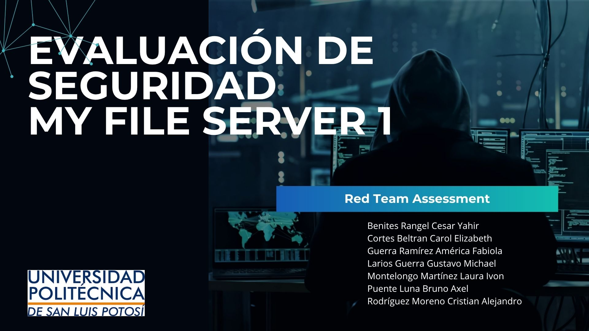
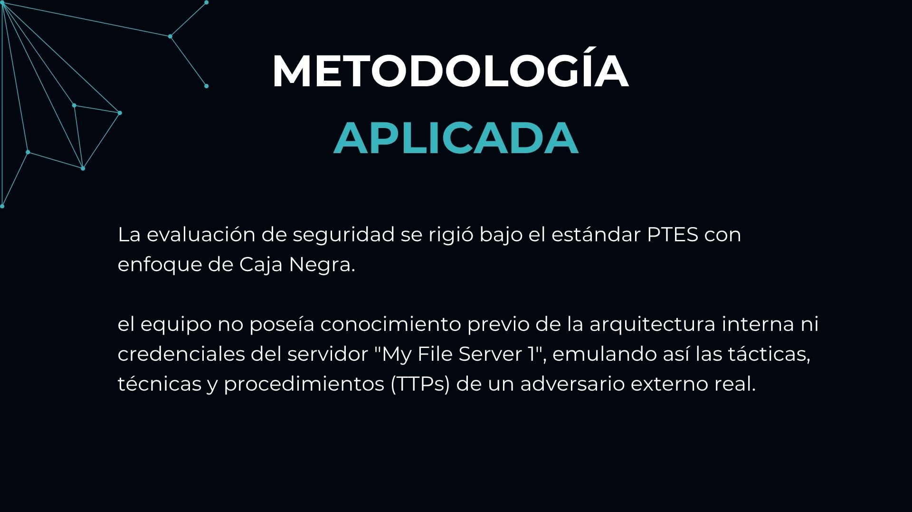
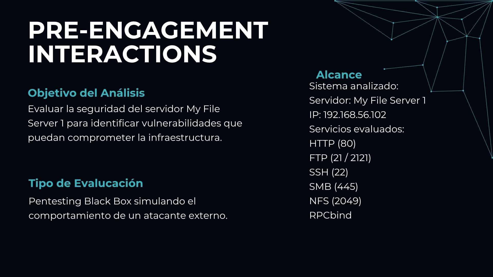
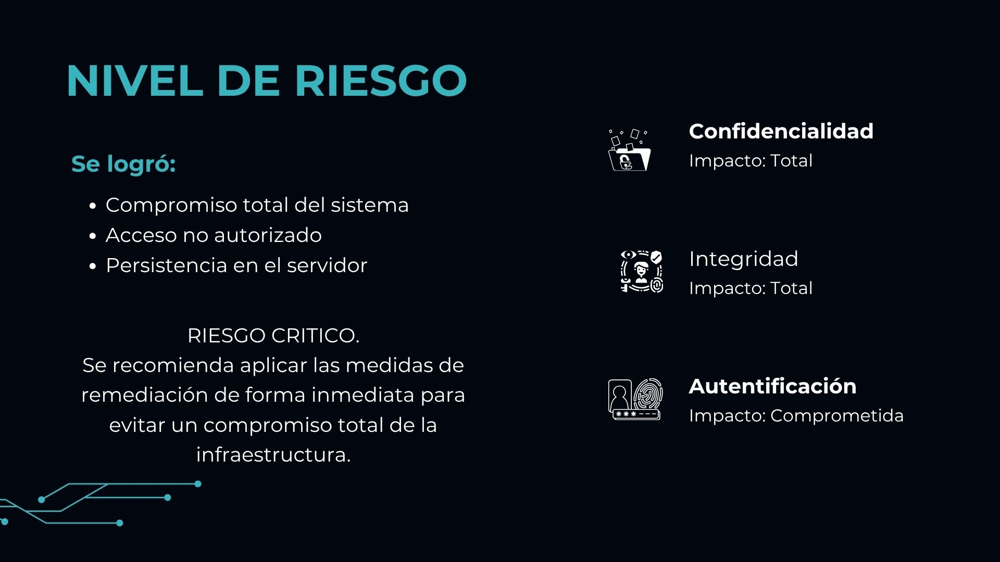
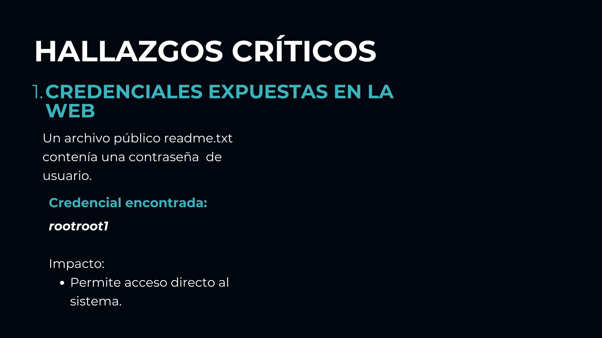
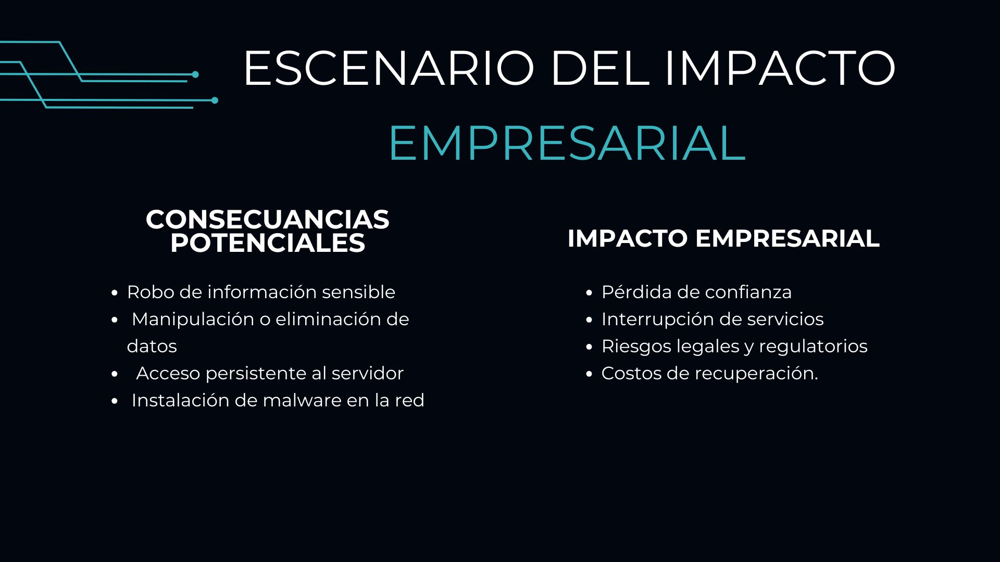
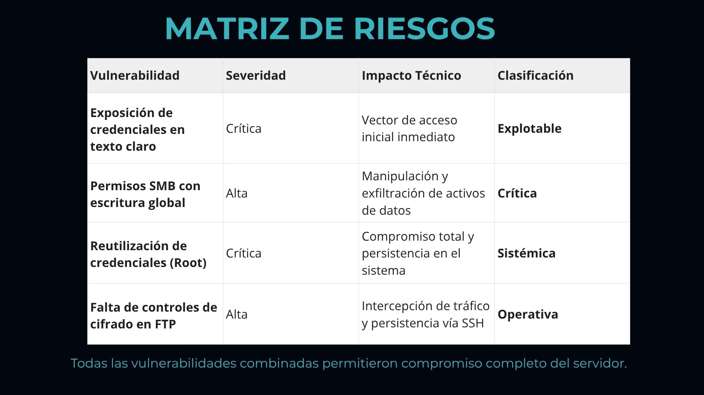
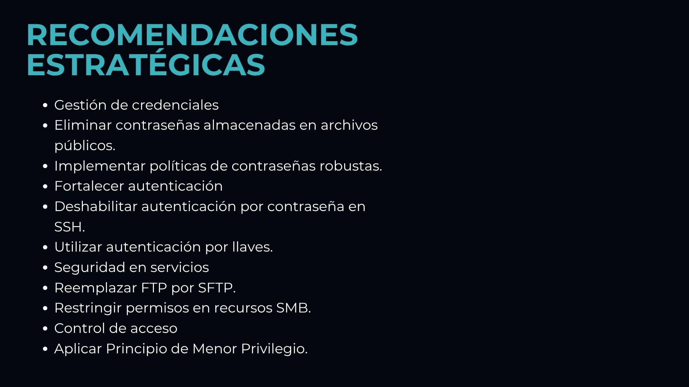
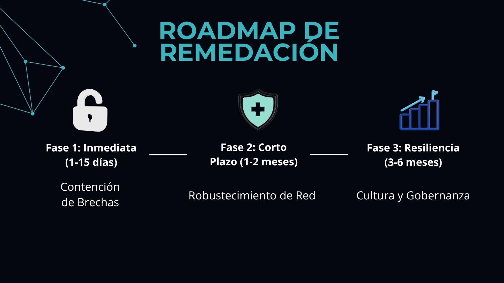
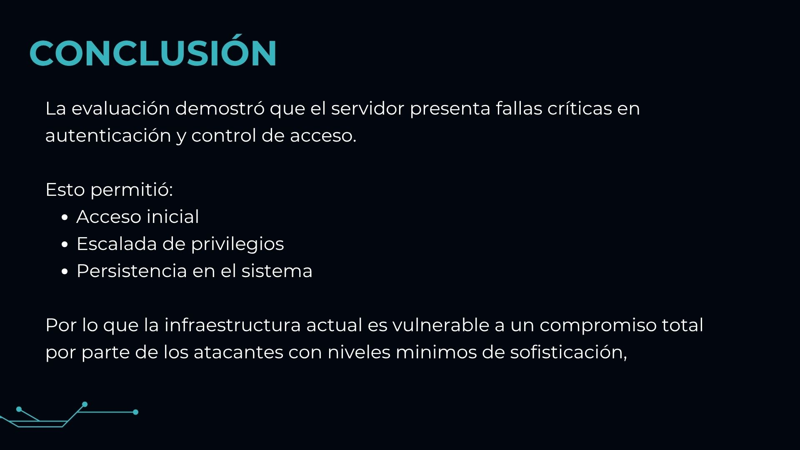

Laura Ivon Montelongo Martínez| Alias: Ivonne
CNO V – Seguridad Informática
Actividad 09 · Red Team Report: Pentesting de “My File Server 1”
Introducción contextual
En el ámbito de la ciberseguridad ofensiva, los ejercicios de Red Team simulan ataques realistas contra la infraestructura de una organización con el objetivo de evaluar su postura de seguridad, identificar vulnerabilidades explotables y medir la capacidad de detección y respuesta del equipo de defensa (Blue Team). Este tipo de pruebas van más allá del simple escaneo automatizado: implican el uso de tácticas, técnicas y procedimientos (TTPs) similares a los de adversarios reales, emulando su comportamiento para descubrir fallos que podrían llevar a un compromiso total del sistema.
En esta ocasión, el equipo asumió el rol de Red Team para atacar la máquina virtual "My File Server 1", un servidor de archivos ficticio que forma parte de un entorno de laboratorio controlado. El objetivo principal era comprometer la confidencialidad, integridad y disponibilidad de los datos alojados en el servidor, siguiendo una metodología estructurada de pentesting en caja negra (black box), es decir, sin información previa sobre la configuración interna del objetivo. A lo largo del informe se documentan las fases de reconocimiento, enumeración, explotación, escalada de privilegios y las recomendaciones para mitigar los hallazgos críticos.
Este ejercicio no solo demuestra la importancia de aplicar parches de seguridad y buenas prácticas de hardening, sino que también resalta cómo una cadena de vulnerabilidades aparentemente menores (como una contraseña en texto plano o un kernel sin actualizar) puede derivar en la pérdida total del control del sistema. La reflexión final y las lecciones aprendidas sirven como base para fortalecer la postura de seguridad en entornos productivos reales.
Curso de Núcleo Optativo V: Seguridad Informática
Red Team Report: Pentesting de “My File Server 1”
Integrantes: Benites Rangel Cesar Yahir – 179091 · Cortes Beltran Carol Elizabeth – 177203 · Guerra Ramirez America Fabiola – 179888 · Larios Guerra Gustavo Michael – 178318 · Montelongo Martinez Laura Ivon – 177291 · Puente Luna Bruno Axel – 177876 · Rodríguez Moreno Cristian Alejandro – 181641
Docente: Mtro. Servando López Contreras
Grupo: T46A
Executive Summary
El presente documento detalla los resultados de la evaluación de seguridad realizada sobre el servidor objetivo "My File Server 1". Durante la auditoría, se logró comprometer el sistema en su totalidad debido a fallos críticos en los mecanismos de Autenticación y Control de Acceso. La exposición de credenciales en texto claro a través del servicio web permitió el acceso no autorizado mediante FTP. Posteriormente, se logró establecer persistencia interactiva en el servidor a través de SSH. El riesgo global del sistema se clasifica como CRÍTICO, representando una pérdida total de la Confidencialidad y la Integridad de los datos.
Durante la fase de post-explotación, se logró evadir los mecanismos de Control de Acceso locales explotando una vulnerabilidad crítica a nivel del kernel de Linux (CVE-2016-5195, conocida como "Dirty COW"). Esto permitió realizar una escalada de privilegios vertical, transitando de un usuario con privilegios limitados (smbuser) a obtener el control absoluto del sistema (root), resultando en el compromiso total de la Confidencialidad, Integridad y Disponibilidad de la infraestructura evaluada.
Alcance
- Objetivo: Máquina virtual "My File Server 1".
- Dirección IP identificada: 192.168.56.102
- Servicios evaluados: HTTP (80), FTP (21/2121), SMB (445), SSH (22), NFS (2049), RPCbind.
- Limitaciones: Las pruebas se realizaron en un entorno de red local controlada.
Metodología aplicada
La evaluación se ejecutó siguiendo un enfoque estructurado de caja negra (Black-Box), emulando las tácticas de un actor de amenazas real. La metodología incluyó las fases de: Reconocimiento pasivo/activo, Enumeración de servicios, Explotación de vulnerabilidades lógicas y Post-explotación (Mantenimiento de acceso).
Fases de reconocimiento
Se inició la auditoría analizando el segmento de red local para identificar activos vivos sin generar alertas masivas. Utilizando la herramienta netdiscover mediante la inspección de paquetes ARP, se logró identificar la dirección MAC (08:00:27:e4:b3:e4) y asignar de manera inequívoca la dirección IP 192.168.56.102 al servidor objetivo.

Enumeración
Se ejecutó un escaneo de puertos y detección de servicios utilizando nmap -sS -sC -p- -T4 192.168.56.102, confirmando la disponibilidad de múltiples vectores de entrada (FTP, SSH, HTTP, RPC, SMB, NFS).


Enumeración Web (HTTP)
Tras descartar vulnerabilidades evidentes en el código fuente de la página principal, y ante la demora de herramientas de fuerza bruta de directorios, se optó por un escaneo de vulnerabilidades web con nikto. Esto reveló la existencia de un archivo público en la raíz (readme.txt), el cual contenía una contraseña hardcodeada (rootroot1), evidenciando una falla crítica en la protección de la Confidencialidad de los Datos.

Enumeración SMB
Para identificar usuarios válidos y evadir los mecanismos de Control de Acceso, se utilizó smbmap -H 192.168.56.102. El análisis de los recursos compartidos expuso los directorios print$, IPC$, smbdata (con permisos de lectura y escritura) y, de manera crucial, un directorio nombrado smbuser. Mediante inferencia lógica, se determinó que smbuser correspondía a una cuenta válida del sistema.

Explotación
Con el vector de Autenticación comprometido (usuario: smbuser, contraseña: rootroot1), se procedió a vulnerar el servicio FTP (vsFTPd). El inicio de sesión fue exitoso, otorgando acceso de lectura y escritura a la estructura de archivos del usuario. Esta brecha confirma la ineficacia de los controles de seguridad lógicos del servidor frente a la fuga de información previa.

Escalada de privilegios
Para elevar el nivel de acceso desde una sesión de transferencia de archivos (FTP) a una consola interactiva completa (bypasseando futuras rotaciones de contraseñas), se ejecutó una técnica de persistencia basada en criptografía asimétrica.
Se generó un par de llaves criptográficas localmente utilizando ssh-keygen -t ed25519.

A través de la sesión FTP previamente vulnerada, se aprovechó la falta de validación de Integridad de los Datos para crear un directorio oculto /.ssh en la raíz del usuario. Se inyectó la llave pública (id_ed25519.pub) en el servidor. Esto permitió autenticarse posteriormente de forma directa a través del servicio SSH, garantizando un acceso remoto continuo y sin restricciones.
Una vez estabilizada la sesión interactiva, se realizó una enumeración del sistema operativo, detectando una versión del kernel de Linux susceptible a la vulnerabilidad de condición de carrera (Race Condition) documentada como CVE-2016-5195 (Dirty COW). Para realizar la transferencia del vector de ataque, se estructuró el código fuente del exploit en un archivo local (dirtycow.c) con el repositorio https://github.com/SecWiki/linux-kernel-exploits/blob/master/2016/CVE-2016-5195/40616.c y se desplegó un servidor HTTP temporal (puerto 8080) en la infraestructura del atacante. A través de este canal, se instruyó al servidor objetivo para descargar el archivo malicioso.
Análisis de impacto (CIA)
| Principio | Descripción del Impacto | Evidencia del Caso |
|---|---|---|
| Confidencialidad | Exfiltración de archivos del servidor mediante acceso FTP y SSH. | Credenciales en texto claro en readme.txt; acceso no autorizado a recursos compartidos SMB. |
| Integridad | Modificación de archivos del sistema, inyección de claves SSH y ejecución de exploits. | Escritura en directorio .ssh, compilación de código malicioso en el servidor. |
| Disponibilidad | El atacante podría interrumpir servicios o cifrar archivos (riesgo de ransomware). | Control total como root permite detener servicios, eliminar logs o instalar backdoors. |
Recomendaciones técnicas
- Implementar autenticación multifactor (MFA) en todos los accesos remotos (SSH, FTP, SMB).
- Nunca almacenar credenciales en texto claro dentro de archivos públicos del servidor web.
- Segmentar redes y aplicar el principio de mínimo privilegio en recursos compartidos SMB.
- Migrar de FTP a SFTP y restringir la capacidad de subir archivos a directorios del sistema.
- Actualizar el kernel a una versión parchada contra CVE-2016-5195 (Dirty COW).
- Remover compiladores (gcc, make) en entornos de producción para evitar compilación de exploits.
- Establecer copias de seguridad offline y probar periódicamente los planes de recuperación.
Tabla de hallazgos
| ID | Vulnerabilidad | Nivel | Descripción | Impacto | Mitigación |
|---|---|---|---|---|---|
| VULN-01 | Exposición de credenciales en texto claro | Crítica | Archivo readme.txt accesible vía HTTP contiene la contraseña "rootroot1". | Compromiso de cuentas de usuario (smbuser). | Eliminar archivos con credenciales; usar gestores de secretos. |
| VULN-02 | Control de acceso inadecuado en recursos SMB | Alta | El recurso smbdata y smbuser tienen permisos READ/WRITE globales. | Exfiltración o modificación de datos. | Restringir permisos por usuario y aplicar ACLs. |
| VULN-03 | Reutilización y configuración insegura de credenciales | Crítica | La misma contraseña (rootroot1) funciona para FTP y SMB. | Movimiento lateral fácil. | Políticas de contraseñas robustas y prohibir reutilización. |
| VULN-04 | Falta de controles de integridad en entorno FTP | Alta | Permite crear directorio .ssh e inyectar claves autorizadas. | Persistencia no autorizada vía SSH. | Auditar escrituras en FTP; migrar a SFTP con chroot. |
| VULN-05 | Escalada de privilegios locales (CVE-2016-5195 / Dirty COW) | Crítica | Versión de kernel 3.13.0-32 susceptible a CVE-2016-5195. | Escalada de privilegios local a root. | Actualizar kernel inmediatamente. |
Presentación










Reflexión técnica
Este ejercicio práctico demostró cómo una cadena de vulnerabilidades aparentemente simples puede llevar al compromiso total de un servidor. La exposición de una contraseña en un archivo de texto accesible por web fue el punto de partida; a partir de ahí, la falta de controles de acceso en SMB y la ausencia de restricciones en FTP permitieron la inyección de claves SSH. Finalmente, un kernel sin parches (Dirty COW) convirtió un acceso de usuario limitado en control absoluto como root.
La lección más importante es que la seguridad no puede depender de una única capa de defensa. Se requiere un enfoque en profundidad: desde políticas de credenciales robustas, segmentación de red, actualizaciones constantes del sistema operativo hasta la monitorización de actividades anómalas. Además, entornos de producción deben eliminar herramientas de compilación y restringir al máximo los permisos de escritura en directorios del sistema.
Como equipo Red Team, este ejercicio refuerza la importancia de documentar cada hallazgo con evidencias claras y proponer remediaciones concretas, alineadas con buenas prácticas y marcos como NIST o ISO 27001.